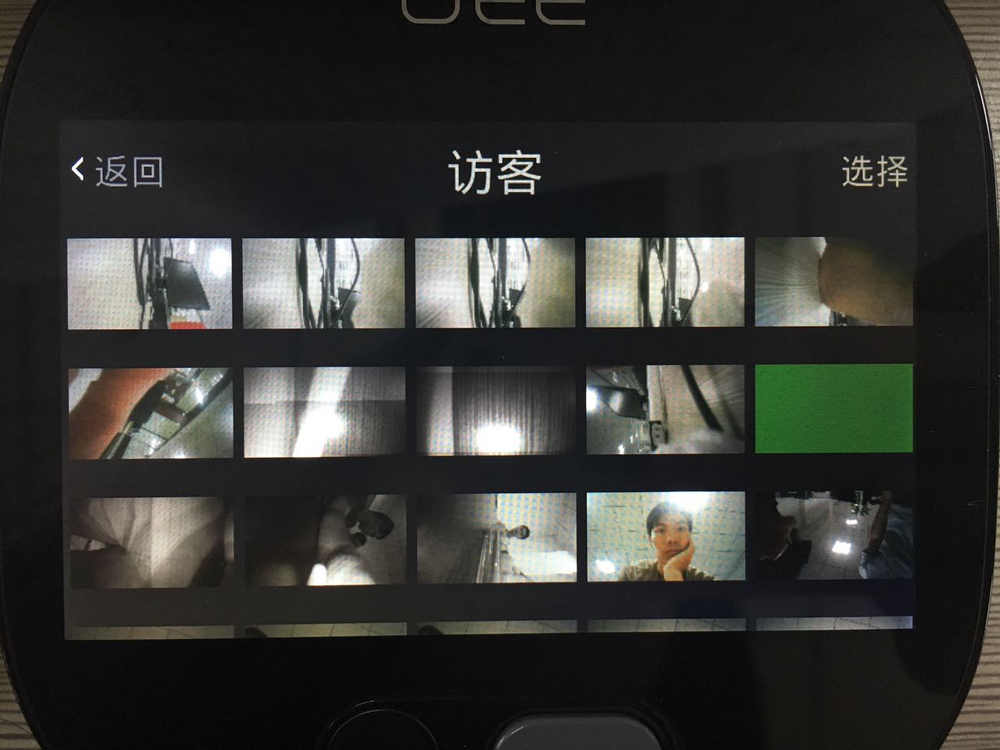

近年来，随着科技的发展，生活水平的提高，物联网、智能家居等不曾设想的电子科技产物逐步进入现代家庭生活，通过物联网技术将家中的各种设备连接到一起，为人们的生活提供安全与便捷。传统意义的门铃是供客人叫门的工具，古代大户人家门上装饰性的门环，门内悬挂的有长线的大铃，都是早期的门铃。进入到现代社会，按下门口的按钮会引发室内的接收器响铃，也真正意义上定义了门铃的概念。但是作用仍然局限于访客叫门引起室内主人的注意。随着社会的进步，人们对于生活的要求越来越高，智能门铃 也逐渐出现在人们的眼前，所谓智能门铃，其作用自然不仅仅局限于叫门，而是通过网络、电子设备等为人们提供所需的更多服务。
智能门铃作为智能家居必不可少的一部分，未来市场的广阔也使得国内外厂商抓住这次趋势，纷纷推出自己的智能门铃设备，比较具有代表性的有移康叮咚、Ring等。但是要使传统门铃厂商都转型做智能门铃，或者智能门铃制造商提供一站式服务都在各方面具有技术难度，需要克服开发APP、保证p2p视频传输的稳定性、消息推送、降低视频的延迟等技术难点，那就需要耗费更多的人力物力，学习积累更多的行业相关技术知识。技术上的限制就使得以深圳厂商为代表的硬件制造商大打价格战，通过不断降低价格、增加硬件功能来获取生存空间，但这种杀敌一千自伤八百的行为仅仅是在延缓死亡时间。这种残酷的价格战极大的压低了厂商的利润，已经严重损害了行业的健康发展，要想更好的发展，必须软硬件结合，从简单的硬件生产向服务运营过度。
南京云恩通讯科技有限公司经过多年的技术研发和经验积累，其旗下的众云视频团队推出智能门铃解决方案，为硬件生产厂商提供从定制开发APP、音视频编码传输到存储分析的一站式解决方案。众云视频是专业的远程视频方案解决商，已经和众多芯片厂商，智能设备商、解决方案商，运营商达成合作伙伴关系，包括ZTE中兴、360公司、创维、安嘉科技，TCL，大疆，深圳狗尾草和016年春晚当红机器人阿尔法1S的所属公司“优必选”等。对接了上百种的智能设备，包括可视化门铃，家用机器人，航拍无人机，网络摄像机（IPCam），DVR/NVR，NAS，3G/4G摄像机，智能机顶盒，Baby Monitor，3G/4G车载记录仪，智能汽车后视镜等等。视频监控软件掌上看家的国内外用户已逾千万，众云视频为其提供P2P视频连接传输、视频编解码、云存储服务，建立采集端与观看端之间的实时视频、视频录制、双向语音对讲、报警侦测消息推送、云存储、多分屏画面等功能，保证其稳定安全运行。
众云视频本身不生产智能门铃，专注于为智能门铃硬件生产厂商提供一站式智能门铃解决方案，众云视频愿携专业的技术研发团队，完善的技术服务与业内智能门铃厂商共同努力，共筑产业辉煌。
原创文章转载请注明：www.zvcloud.com